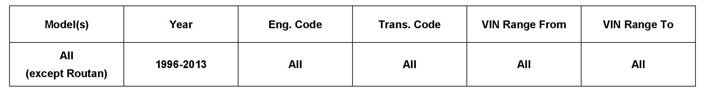

Lighting - Exterior Light Moisture Accumulation
94 11 04November 14, 2011
2011521 *Supersedes T.B. V940806 dated November 24, 2008 due to additional models and model year applicability.*

Vehicle Information
Condition
Exterior Lights, Moisture Accumulation
Note:
Condensation and or water droplets visible on inside of exterior light lenses.
Technical Background
Exterior light assemblies (headlights, taillights, fog lights, turn signals) are vented and may collect moisture on their inner surfaces, depending on humidity and other climatic changes.
Production Solution
No Production Change required.
Service
For headlights, the affected lens surface should be clear after approx. 10 minutes of light operation, although the entire surface may not clear.
In cases where larger water droplets have formed on the inside of the lens or significant amount of water has collected at the bottom of a light assembly:
^ Check for leaking seals, cracks in lenses or assemblies.
DO NOT replace light or lens assemblies unless damage is found. If damage to seals or cracks to lenses or assemblies are found:
^ Follow normal repair procedures for this type of failure (provide a photograph, if possible, with repair documentation for verification).
If no damage is found:
^ Use compressed air (less than 30 PSI ) to blow out the lens.
Warranty
Information only.
Required Parts and Tools
No Special Parts required.
No Special Tools required.
Additional Information
All part and service references provided in this Technical Bulletin are subject to change and/or removal.
Always check with your Parts Dept. and Repair Manuals for the latest information.